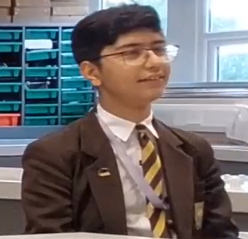

MOIDEENI KHAN

Peer Marking
-
"Absolutely outstanding, the shape and colour of this object is fascinating" - Kelvin '冰淇凌' Zhang
-
"10/10 for autism and hair. A true LGBTQ+ icon" - Yahya '5ft4' Variava
-
"4/10 Looked at me funny" - Kevin 'Megamind' Zhou
-
"11/10 reminds me of Mackenzie Stevenson" - Toby 'mad forehead and mad back' Hillman
-
"10/10 truly a spectacle to look at, mad expressionalist and emotional piece" - Wilson 'Walter White' Freeman
-
"If i was gay, i'd do him; luckily i'm not;)" - Jake "Jesse Pinkman"
-
"Damn. He look like a special goldfish" - Omar 'The Wind' Kadarsha
-
"Very luscious locks 10/10 would reccomend" - Isaac 'Massive Balls' Rowntree
-
"No comment" - Jacob 'Generic' Lister
-
"Amazing how someone can look this clapped -5/10" - Abdul 'The Moideeni' Khan